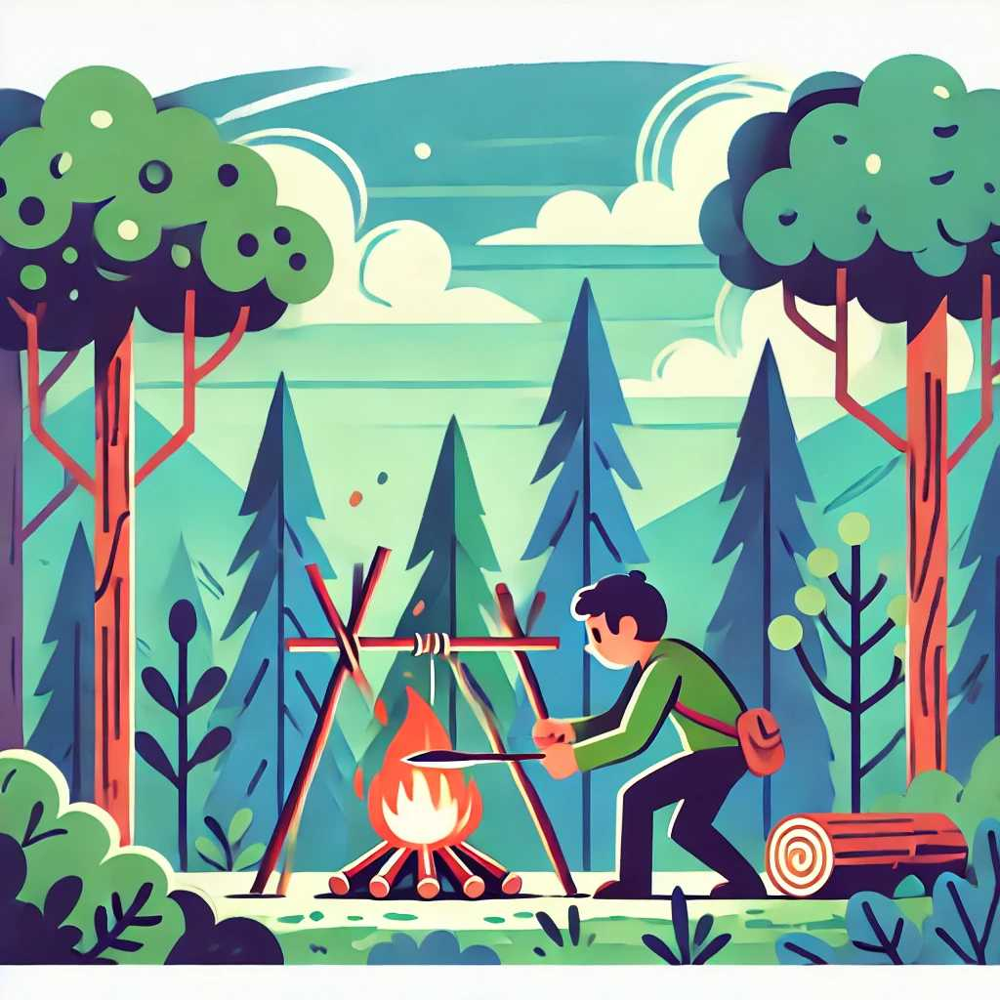

How to Start a Fire Without Matches: Expert Techniques
Starting a fire without matches is a vital skill in any survival situation. It can provide warmth, light, and a means to cook food. Here are some expert techniques to start a fire using alternative methods.
1. Fire by Friction
Fire by friction is one of the oldest methods of fire starting. It involves creating enough heat through friction to ignite tinder.
Bow Drill Method:
- Materials Needed: A bow, a spindle, a fireboard, and a socket.
- Steps:
- Create a bow using a flexible stick and a cord.
- Place the spindle on the fireboard and loop the bowstring around it.
- Hold the spindle in place with the socket.
- Move the bow back and forth to rotate the spindle, creating friction.
- Once you see smoke, gently blow on it to ignite the tinder.
Hand Drill Method:
- Materials Needed: A spindle and a fireboard.
- Steps:
- Place the spindle on the fireboard.
- Roll the spindle between your hands while pressing down.
- Continue until you produce an ember.
- Transfer the ember to the tinder and blow gently to ignite.
2. Fire by Percussion
Fire by percussion involves striking a hard material against flint or steel to create sparks.
Flint and Steel Method:
- Materials Needed: A piece of flint and a steel striker.
- Steps:
- Hold the flint in one hand and the steel striker in the other.
- Strike the steel against the flint at an angle to create sparks.
- Direct the sparks onto a piece of char cloth or tinder.
- Blow gently to ignite the tinder.
Ferrocerium Rod Method:
- Materials Needed: A ferrocerium rod and a scraper.
- Steps:
- Hold the ferrocerium rod in one hand and the scraper in the other.
- Scrape the rod firmly to create sparks.
- Direct the sparks onto the tinder.
- Blow gently to ignite the tinder.
3. Fire by Chemical Reaction
Certain chemicals can produce fire through exothermic reactions.
Potassium Permanganate and Glycerin Method:
- Materials Needed: Potassium permanganate and glycerin.
- Steps:
- Place a small pile of potassium permanganate on the ground.
- Add a few drops of glycerin on top.
- Stand back as the reaction will produce a flame.
- Use the flame to ignite your tinder.
4. Fire by Solar Energy
Using solar energy to start a fire requires a magnifying glass or a similar lens.
Magnifying Glass Method:
- Materials Needed: A magnifying glass.
- Steps:
- Focus the sunlight through the magnifying glass onto a small piece of tinder.
- Hold the focus steady until the tinder begins to smolder.
- Blow gently to ignite the tinder.
Reflective Parabolic Method:
- Materials Needed: A reflective parabolic surface (e.g., a polished can bottom).
- Steps:
- Position the parabolic surface to reflect and concentrate sunlight onto the tinder.
- Hold steady until the tinder begins to smolder.
- Blow gently to ignite the tinder.
5. Fire Plough Method
The fire plough method involves ploughing a piece of wood along a groove to generate heat through friction.
Fire Plough Technique:
- Materials Needed: A plough (a stick) and a fireboard.
- Steps:
- Cut a groove in the fireboard.
- Rub the plough back and forth along the groove.
- Continue until you produce an ember.
- Transfer the ember to the tinder and blow gently to ignite.
Conclusion
Mastering these techniques takes practice, but they are invaluable in survival situations where matches or lighters are unavailable. Always prepare your tinder and kindling beforehand to ensure your fire will catch and sustain. With these skills, you'll be better equipped to handle emergencies and enjoy outdoor adventures safely.